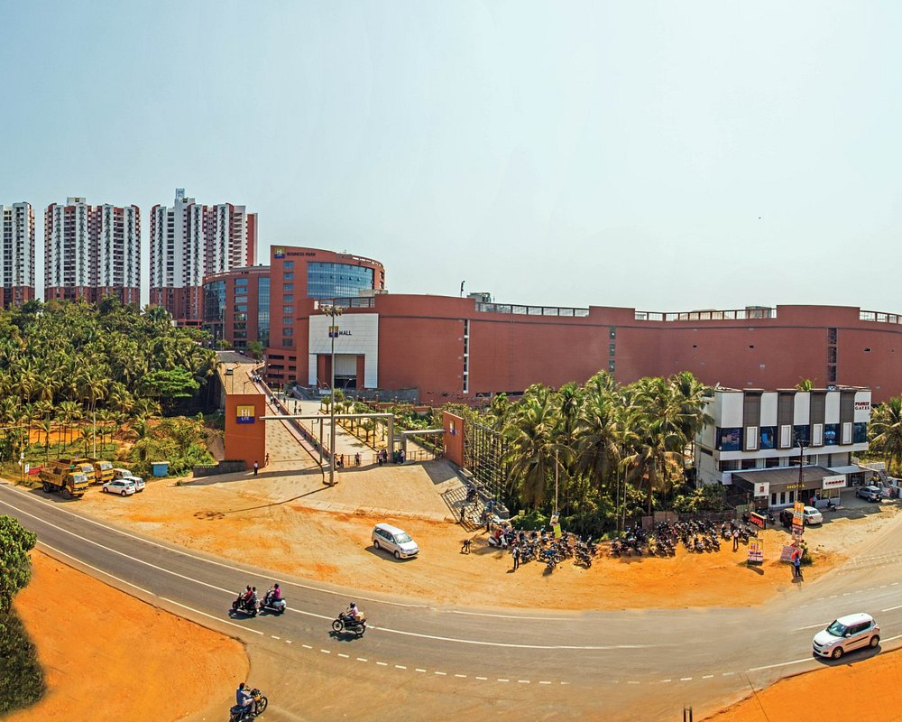
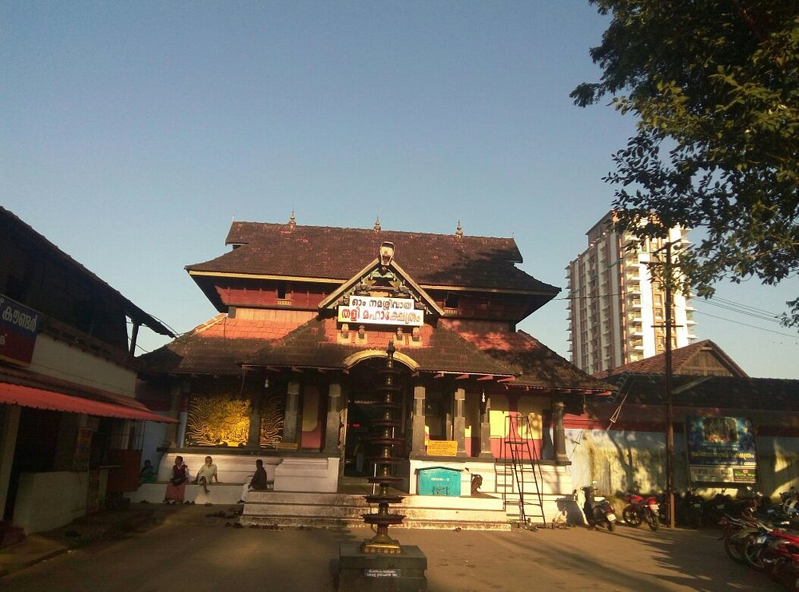

Kappad beach is a very calm beach and have very much historical importance. It's said that Vasco Da Gama from Portugal landed here in the shore of Kappad. This is a very clam beach. There is hure rock in one side of this beach. We can climb that rock and view from that rock top is just wow. Evenings here are amazing

The mall has a good underground parking lot. We had to pay ₹20 for the one time parking. The mall is fairly large and has all the well-known brands of clothing, footwear, jewellery, electronics, cell phones, accessories, furniture and what have you.

We visited here in the evening. It is a traditional old temple dedicated to lord Shiva. Heard it was built in the 14th century. A must see temple in the heart of the city.